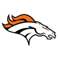
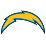

TEXT
Denver Broncos' win over Los Angeles Chargers (10/6/2019)
Denver shut down Los Angeles in the first half with 17 points.
Chargers put some points on the board in the second half. They scored a touchdown and 2 field goals.
Unfortunately for Los Angeles the Broncos scored enough in the first half and played defense well enough to win the game. The final score is Denver 20 and Los Agneles 13.
TABLE
Scores by Quarter
| Team Name |
First Half |
Second Half |
Final |
| Q1 |
Q2 |
Q3 |
Q4 |
| Denver Broncos |
14 |
3 |
0 |
3 |
20 |
LA Chargers |
14 |
3 |
0 |
3 |
13 |
| Total |
14 |
3 |
7 |
9 |
LIST

Roster (Active)
- Head Coach: Vic Fangio
Offense
- Quarterbacks
- B. Allen
- J. Flacco
- Running Backs
- D. Booker
- R. Freeman
- P. Lindsay
- Full Backs
- A. Beck
- A. Janovich
- Wide Recievers
- F. Brown
- D. Hamilton
- E. Sanders
- D. Spencer
- C. Sutton
- J. Winfree
- Tight Ends
- N. Fant
- T. Fumagalli
- J. Heuerman
- Guard
- R. Leary
- C. McGovern
- A. Schlottmann
- Offensive Tackle
- C. Anderson
- G. Bolles
- J. James
- D. Risner
- J. Rodgers
- E. Wilkinson
Defense
- Defensive Ends
- A. Gotsis
- D. Jones
- D. Walker
- D. Wolfe
- Defensive Tackle
- S. Harris
- Outside Linebackers
- V. Miller
- Inside Linebackers
- T. Davis
- J. Jewell
- Linebackers
- A. Attaochu
- J. Hollins
- A. Johnson
- J. Jones
- C. Nelson
- M. Reed
- Corner Backs
- B. Callahan
- C. Harris
- D. Harris
- C. Sensabaugh
- I. Yiadom
- Defensive Backs
- D. Dawson
- K. Jackson
- T. Marshall
- Free Safety
- J. Simmons
- C. McLaughlin
- Strong Safety
- W. Parks
Special Teams
- Kickers
- B. McManus
- Punter
- C. Wadman
- Long Snapper
- C. Kreiter

Roster (Active)
- Head Coach: Anthony Lynn
Offense
- Quarterbacks
- P. Rivers
- E. Stick
- T. Taylor
- Running Backs
- A. Ekeler
- M. Gordon
- J. Jackson
- T. Pope
- Full Backs
- D. Watt
- Wide Recievers
- K. Allen
- G. Davis
- J. Moore
- A. Patton
- M. Williams
- Tight Ends
- V. Green
- H. Henry
- L. Kendricks
- Center
- R. Groy/li>
- S. Quessenberry
- Guard
- D. Feeney
- F. Lamp
- M. Schofield
- Offensive Tackle
- T. Pipkins
- T. Scott
- S. Tevi
Defense
- Defensive Ends
- J. Bosa
- M. Ingram
- I. Rochell
- D. Square
- Defensive Tackle
- C. Broughton
- J. Jones
- T. McGill
- B. Mebane
- J. Tillery
- Outside Linebackers
- T. Davis
- K. White
- Middle Linebackers
- D. Perryman
- Linebackers
- N. Dzubnar
- E. Egbule
- U. Nwosu
- D. Tranquill
- Corner Backs
- M. Davis
- C. Hayward
- Defensive Backs
- N. Adderley
- B. Facyson
- R. Jenkins
- D. King
- R. Teamer
- J. Watkins
Special Teams
- Kickers
- M. Badgely
- C. McLaughlin
- Punter
- T. Long
- C. McLaughlin
- Long Snapper
- C. Mazza
FORM